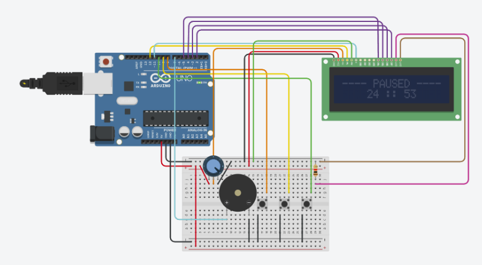
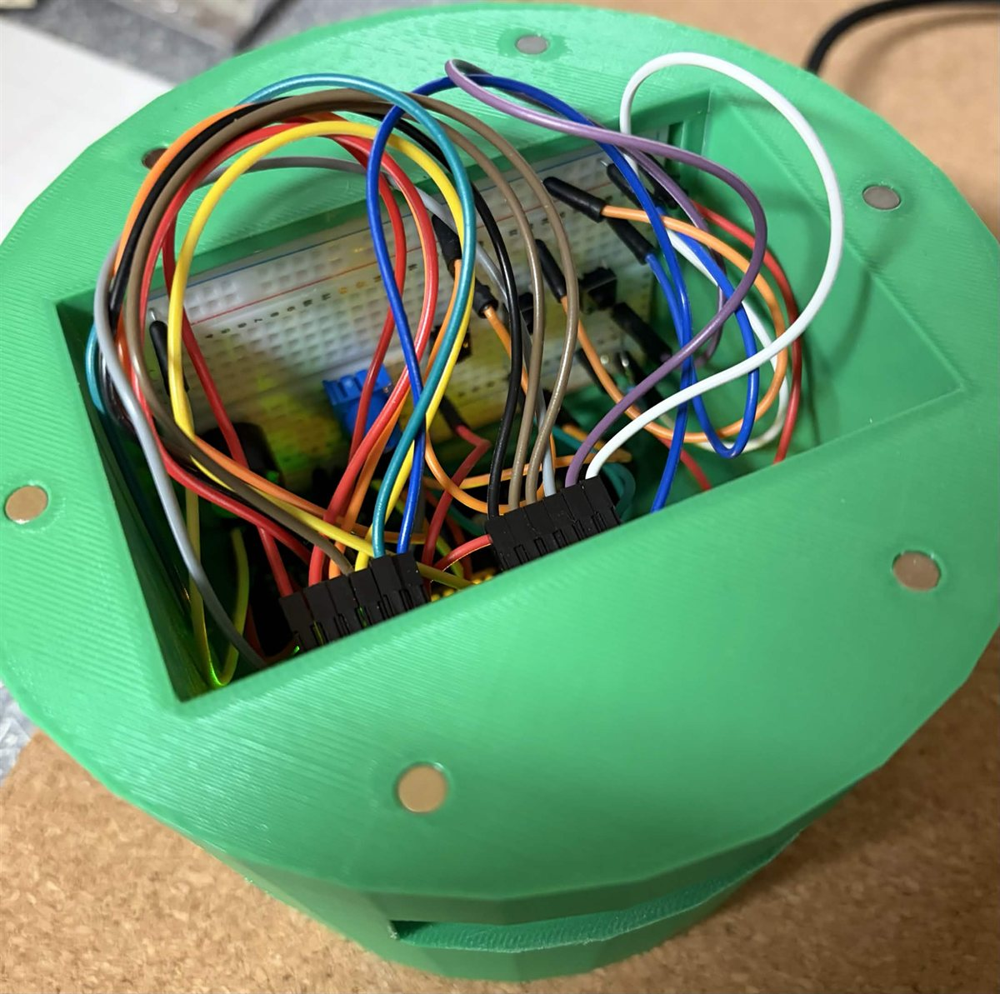
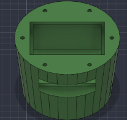
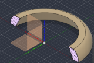
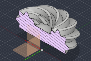
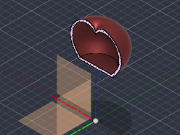

I study with Pomodoro (25 minutes of focus, 5 minute break, repeat), but every time I used my phone as the timer, I ended up doomscrolling on my phone. So I built a desk timer instead: an Arduino, a little screen, four buttons and a buzzer, stuffed inside a 3D-printed cupcake.

It's got a classic 25/5 mode, a custom mode where you pick the lengths and number of cycles, pause/resume, a mute button that remembers itself, and a summary of how much you got done. You can also control it from a computer over USB.
The circuit
An Arduino Uno, a 16x2 LCD, a potentiometer for contrast, a piezo buzzer and four buttons. I mocked the whole thing up in Tinkercad before touching real wires. The buttons go straight to ground and use the Arduino's built-in pull-ups, so no extra resistors needed.

No delay() allowed
The easy way to write a timer is delay() for a second and count down, but then the Arduino is frozen and misses button presses. Mine's a state machine instead (menu, focus, break, paused, summary...). Every loop it checks the buttons, USB and the clock, then redraws. Nothing ever blocks, so presses register instantly.
Time comes from the Arduino's millisecond clock instead of counting ticks, buttons are debounced over 30 ms, and mute is saved to EEPROM so it survives being unplugged.
The cupcake
I designed the case in Fusion and printed it in two parts. The base holds the electronics, and the lid is the fun part: cake rim, frosting swirl, cherry on top. Magnets hold it shut, so I can pop it open without a screwdriver.





Talking to a computer
It speaks a dead simple one-line text protocol over USB. Send START 25 5 4 (25 min focus, 5 min break, 4 cycles), PAUSE or EXIT, and every second it replies with its entire state. Since it sends everything every time, whatever's listening never has to keep track. Missed a message? The next one fixes it. That's how Pomegranate mirrors the countdown on my screen.
Testing
Besides using it every day, I ran it in a simulator built from the same code and threw USB commands at it until I'd hit every state.
What's next
V2 is a tiny wireless desk robot, about action-figure size. A round touchscreen on an ESP32-S3 becomes its face, Bluetooth replaces the USB cable (same protocol), and it gets a battery and a vibration motor for silent alerts. I'm also designing a custom PCB in Altium to replace the rat's nest of wires.
Built solo: C++ on an Arduino Uno R3, case in Autodesk Fusion.